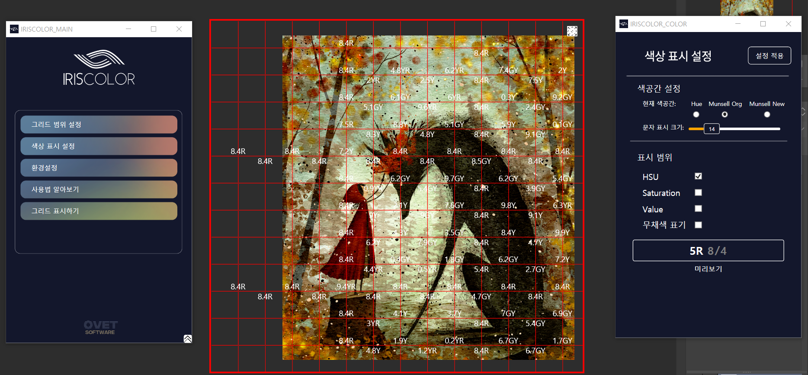
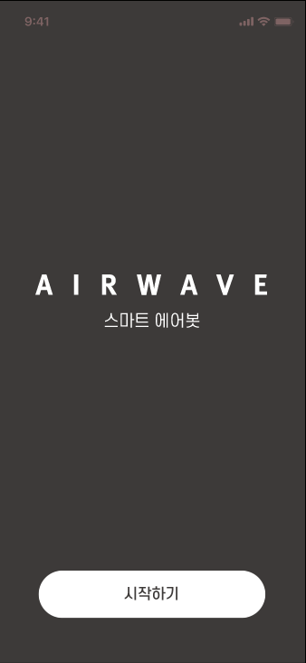
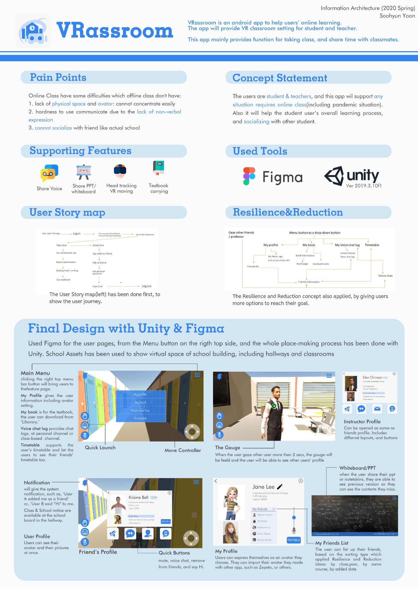
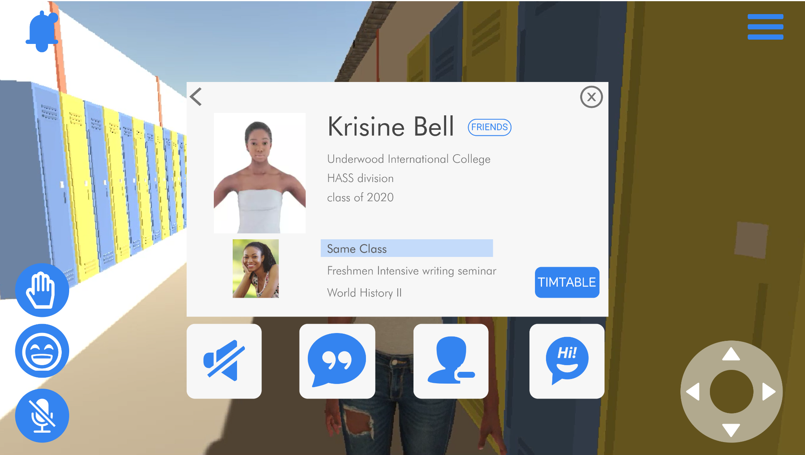
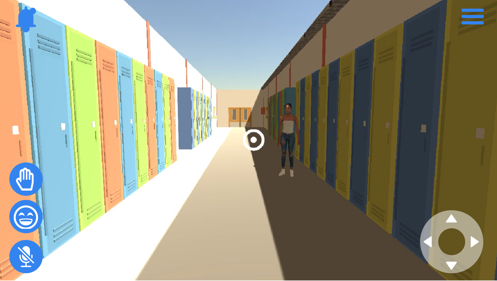

Past Projects
UX Design & User Research
Odia Academy Projects
July 2023 – March 2025
Worked across multiple digital products in art accessibility, online education, and creative marketplaces, leading UX design and user research for several projects from early concept development through prototyping.
IRISCOLOR — Color Accessibility System
Contributed to the research and UX design of a color-identification system for people with color vision deficiency (CVD). The project explored translating conventional numerical hue values into the Munsell Color System, which represents hues through intuitive categories such as R (Red) and Y (Yellow). I participated in researching the conversion from existing hue values to Munsell-based notation and designing how this information could be displayed so users familiar with the system could identify colors more directly.
COMMA ONE — Online Art VOD Platform
Led the UX design and user research for an online art education VOD platform. My work included information architecture, web and app design, user flow development, interactive prototyping, and user interviews. I translated research findings into the service structure and interface design, helping shape the overall learning experience across the platform.
Webtoon Education Platform
Contributed to the UX/UI design of an online webtoon education platform. I participated in structuring educational content, organizing navigation and key user flows, and designing the web-based learning experience.
Art Commission Platform
Led the UX and product design of Panella, an online art commission platform connecting artists with clients. I worked on the service structure, user flows, interface design, and interactive prototyping, helping define the end-to-end commission experience from browsing and requesting work to communication between creators and clients.

IRISCOLOR — Munsell-based color identification interface
App & Service Design
Airwave Project
Development of Servitization on Smart Air Clean System (Air-bot & Air-block) using Acoustic Waves and Clean Plasma Technology
DK Co., Robot & More, Korea Institute of Industrial Technology, Creative Design, Yonsei University Industry Foundation, & Korea Air Industry Promotion Association.
Our Team: Yonsei Univ. DEY Lab
Research Report
DK Co., Robot & More, Korea Institute of Industrial Technology, Creative Design, Yonsei University Industry Foundation, & Korea Air Industry Promotion Association. (2023). 2023 Annual Report of Development of Servitization on Smart Air Clean System (Air-bot & Air-block) using Acoustic Waves and Clean Plasma Technology. Participating researcher: Soohyun Yoon. (Project ID: 20012685).

App & Service Design
Possi
Branding Project: Synthetic C&C Service App for Out-of-School Teenagers
Yonsei Univ. UIC
TAD Capstone 2022
Promotional Video
Interactive Service(Feature) Design
CJ N ME
A new way to watch together- share your voice, share your experience
Yonsei Univ. UIC
Interaction Design 2020
Prototypes
Prototypes Web ver.
App & Service Design
Record Life
Video making for the novice video maker
Yonsei Univ. UIC
Interaction Design 2020
Service / Feature Design
VRassroom
VR Online Class Service Design
Yonsei Univ. UIC
Information Architecture 2020


